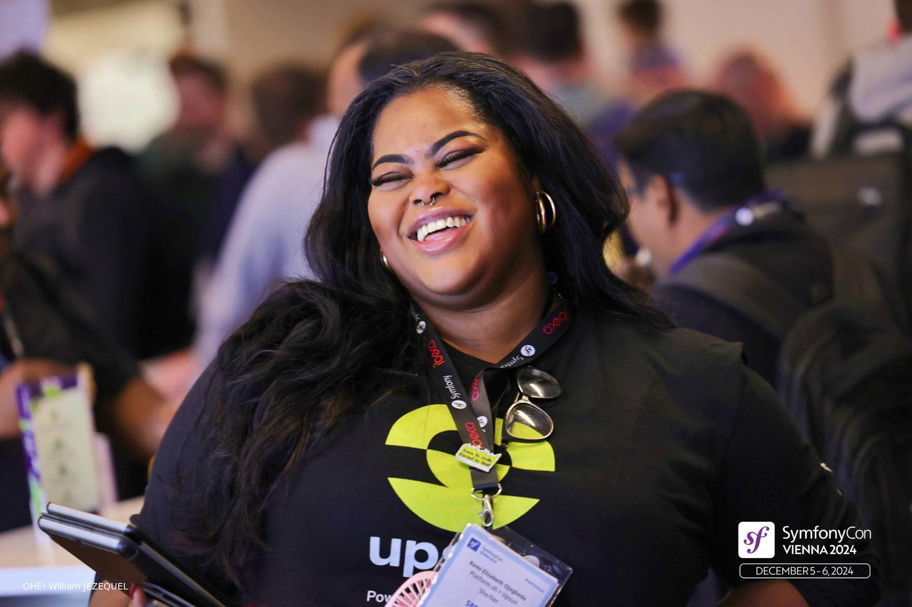
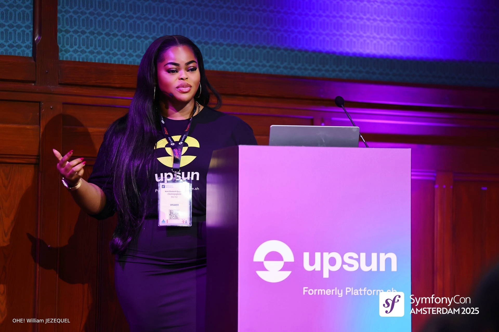
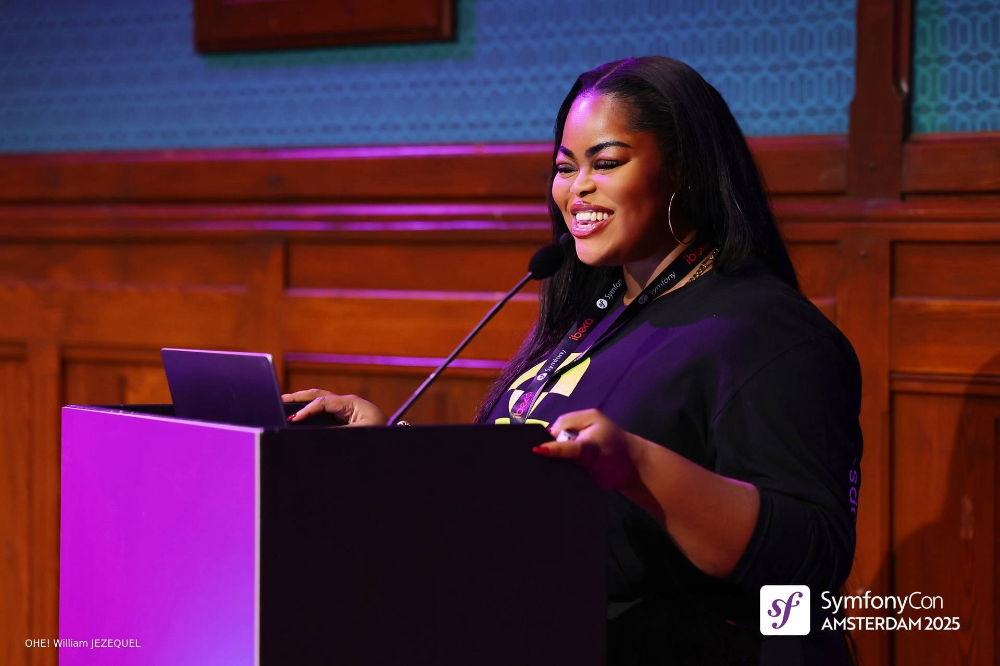
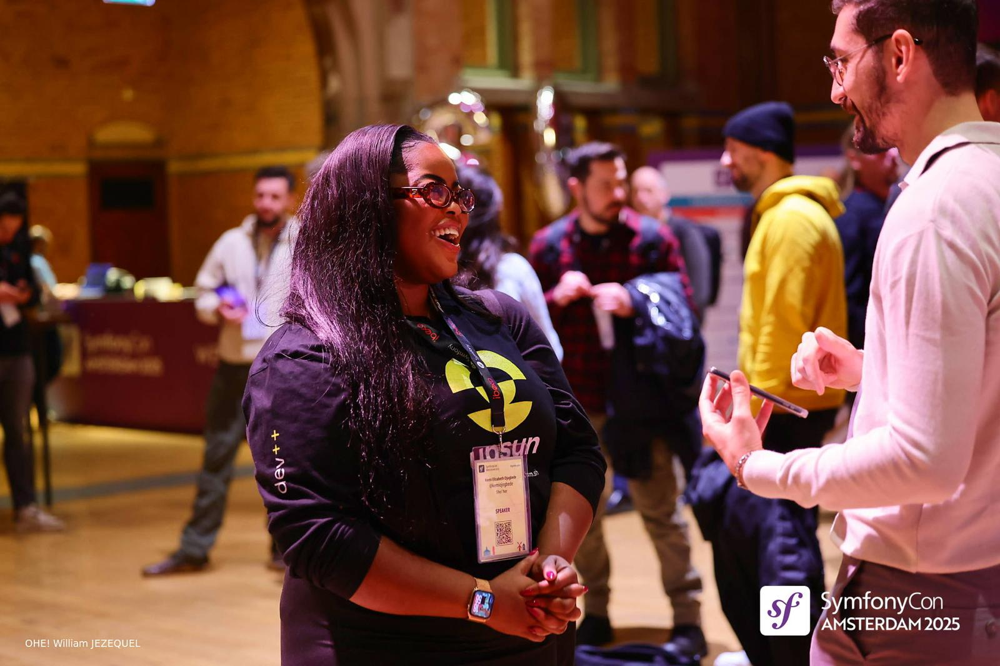
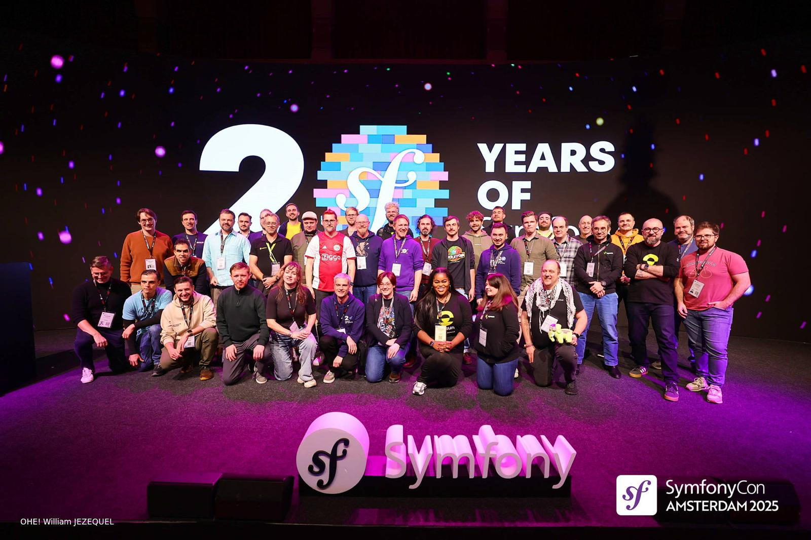
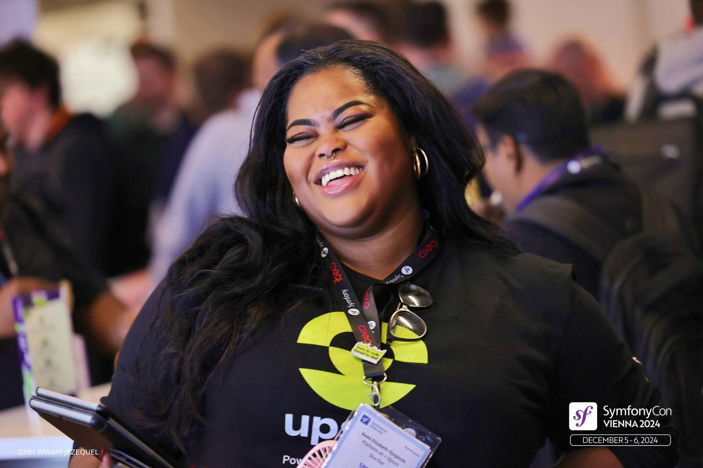
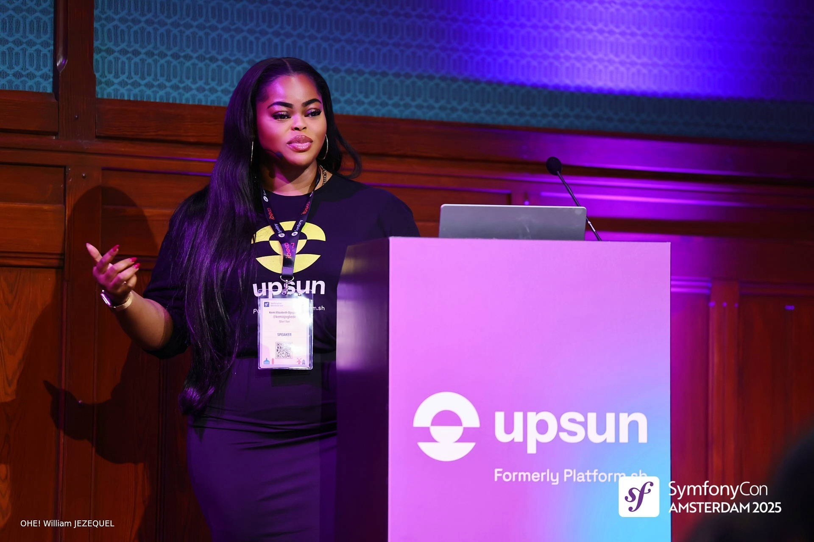
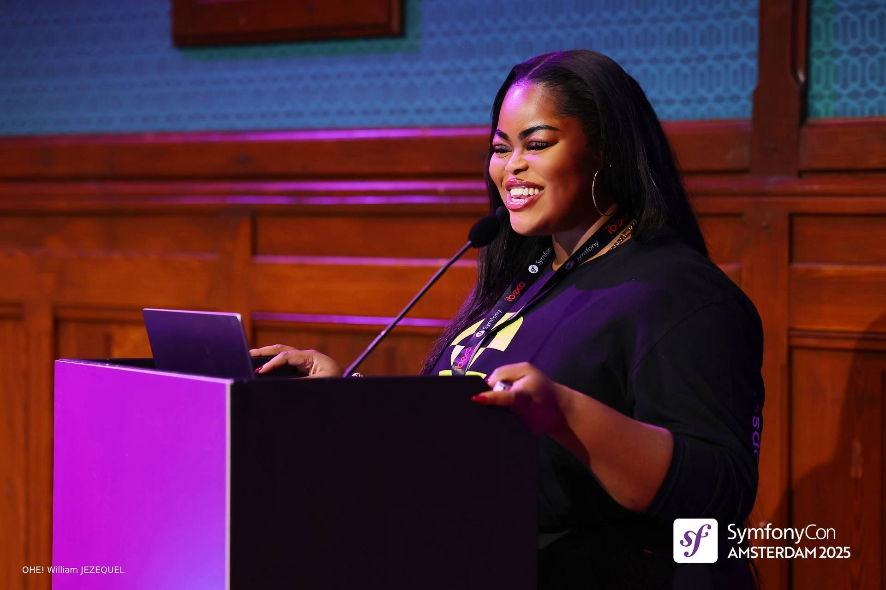
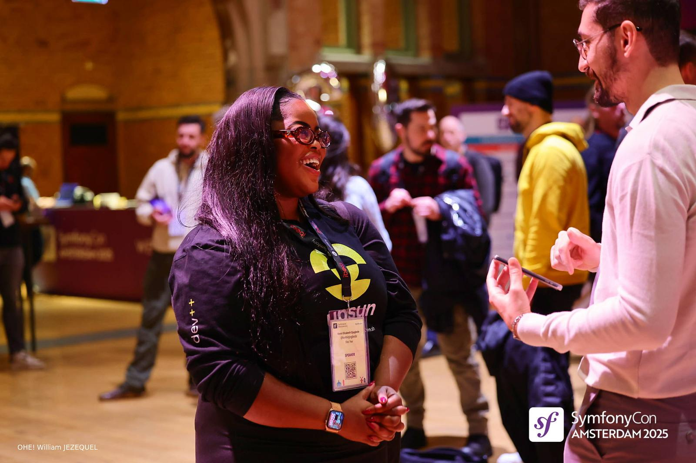
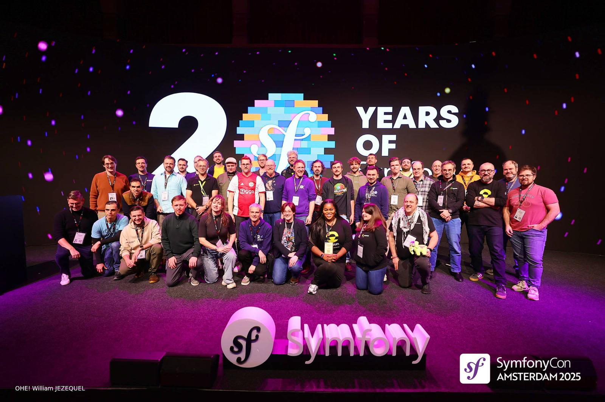

Kemi Elizabeth Ojogbede
Senior Technical Writer & Developer Advocate • Python & AI • Documentation Strategist & Engineer
Senior Technical Writer & Developer Advocate • Python & AI • Documentation Strategist & Engineer
 









 GitHub & Projects
GitHub & Projects
Multi-persona technical documentation analysis tool using Python, FastAPI, HTML/CSS/JS and OpenAI API. Provides actionable feedback and iterative improvement workflows for documentation teams.
View on GitHubPython + Flask app converting long-form content into concise tweets using reasoning steps and LLMs. Supports content marketing and developer advocacy workflows.
View on GitHubMaster of Science, Data Science
Birkbeck University of London | 2019 - 2021
Master of Arts, Contemporary Literature & Cultural Theory
Birkbeck University of London | 2014 - 2016

Bachelor of Arts, English with Creative Writing
University of Nottingham | 2011 - 2014

Read through these examples of my published technical writing, developer documentation, and research work across APIs, software platforms, and data-driven analysis:
These are just a selection of my technical writing, data, and research work.
Read through these examples of my published journalism work across national and international media outlets:
These are just a selection of my journalism work.